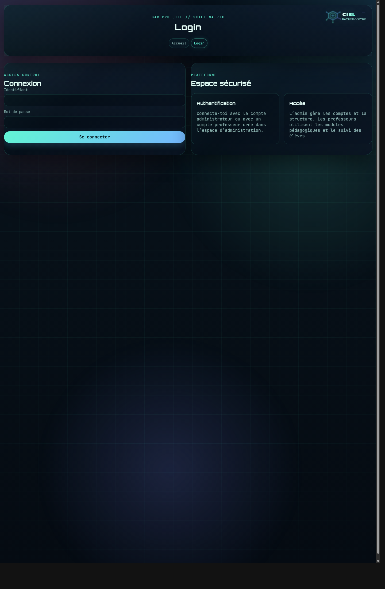
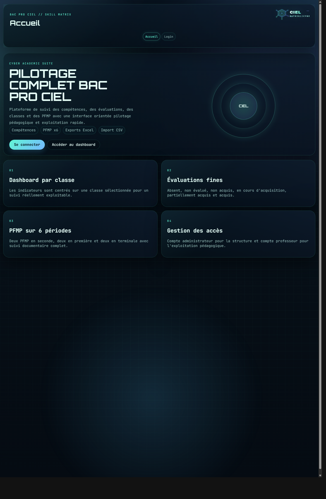

Guide institutionnel utilisateur
CIEL Matrix
Mode d’emploi complet de la plateforme de pilotage pédagogique du Bac Pro CIEL. Ce guide a été conçu pour permettre à un utilisateur de prendre en main l’application, de l’utiliser au quotidien et d’exploiter toutes ses fonctions clés sans assistance technique.
Sommaire
- Présentation générale
- Connexion et rôles
- Navigation générale
- Gestion des classes et des élèves
- Gestion des évaluations et des séances
- Pilotage via le dashboard
- Gestion des PFMP et du livret
- Bulletins, exports annuels et synthèses 3 ans
- Référentiel, cartographie, bibliothèque
- Remédiations et exploitation pédagogique
- Gestion des comptes
- Bonnes pratiques
1. Présentation générale
CIEL Matrix est une application métier dédiée au Bac Pro CIEL. Elle permet de structurer le suivi pédagogique sur l’ensemble du cycle, de la 2nde à la Terminale, en articulant compétences, séances, PFMP, bilans, exports et remédiations.
Domaines gérés
- Réseau Informatique
- Cybersécurité
- Electronique
Public visé
- Administrateur
- Prof principal
- Professeur
- Lecture seule
2. Connexion et rôles
La page de connexion permet d’accéder à l’application avec un identifiant et un mot de passe. Les droits dépendent du rôle attribué au compte.

Rôles
- Administrateur : structure, comptes, classes, exports et administration générale.
- Prof principal : pilotage pédagogique renforcé.
- Professeur : gestion des séances, compétences, PFMP.
- Lecture seule : consultation.
3. Navigation générale
La topbar donne accès aux grands modules de l’application. Les menus déroulants par classe permettent de charger directement la bonne vue selon le niveau ou le besoin pédagogique.

4. Gestion des classes et des élèves
Créer une classe
Le module Classes permet de créer les classes de 2nde, 1ère et Terminale, avec leur année scolaire et une note de contexte.
Ajouter des élèves
Les élèves peuvent être ajoutés manuellement ou importés en masse via un fichier CSV.
Modifier et supprimer
Chaque élève peut être modifié ou supprimé directement depuis la liste. Les classes peuvent également être modifiées.
Conseil
Créer la structure des classes avant d’importer les élèves permet d’éviter les incohérences de rattachement.
5. Gestion des évaluations et des séances
Le module Evaluations est structuré en trois usages : Création de séance, Evaluation séance et Compétences élèves.
Création de séance
- choix de la classe
- TP ou TD
- titre
- date de début et de fin
- plusieurs compétences
- indicateurs
Evaluation de séance
Chaque séance peut être évaluée élève par élève, indicateur par indicateur, avec les niveaux pédagogiques définis dans l’application.
Niveaux utilisés
- Absent
- Non évalué
- Non acquis
- En cours d’acquisition
- Partiellement acquis
- Acquis
Banques d’indicateurs
Les banques sont filtrées par domaine : Réseau Informatique, Cybersécurité, Electronique.
6. Pilotage via le dashboard
Le dashboard est organisé par classe et par vue :
- Pilotage compétences
- Pilotage PFMP
- Calendrier pédagogique
Cette organisation permet de lire rapidement les indicateurs sans charger un écran unique trop dense.
7. Gestion des PFMP et du livret
Infos PFMP
Pour chaque élève et chaque période, on peut suivre l’entreprise, le tuteur, les conventions, la visite, le rapport, le livret, la présence et les compétences observées.
Livret d’évaluation
Le livret PFMP est séparé du suivi administratif afin de respecter un fonctionnement de terrain plus proche des usages d’établissement.
Les PFMP sont gérées sur tout le parcours :
- 2nde : PFMP 1 et PFMP 2
- 1ère : PFMP 1 et PFMP 2
- Terminale : PFMP 1 et PFMP 2
8. Bulletins, exports annuels et synthèses 3 ans
Le module Bulletin permet d’obtenir des synthèses par élève. Les exports sont désormais disponibles pour :
- Compétences 2nde
- Compétences 1ère
- Compétences Terminale
- Synthèse compétences 3 ans
- PFMP 2nde
- PFMP 1ère
- PFMP Terminale
- Synthèse PFMP 3 ans
9. Référentiel, cartographie et bibliothèque
Couverture du référentiel
Permet de mesurer la couverture des compétences par classe et par domaine.
Cartographie
Relie compétence, séances et PFMP. Une heatmap visuelle aide à identifier les manques et les zones fortement exploitées.
Bibliothèque de séances
Stocke des modèles réutilisables par niveau, domaine et compétences.
Duplication
Une séance modèle peut être réinjectée vers une classe et une période précise pour gagner du temps.
10. Remédiations et exploitation pédagogique
Le module Remédiations est séparé entre :
- Remédiations PFMP
- Remédiations compétences
Il permet de détecter les zones faibles, de filtrer par élève, d’exporter les remédiations et de créer une séance de remédiation directement depuis une alerte.
11. Gestion des comptes
Le module Comptes est réservé à l’administrateur. Il permet :
- l’ajout de comptes
- la modification des mots de passe et identifiants
- le choix du rôle
- la suppression de comptes
- l’export et la restauration d’une sauvegarde
12. Bonnes pratiques d’utilisation
Organisation
Créer les classes puis importer les élèves. Structurer l’année avant de saisir les séances.
Saisie régulière
Mettre à jour les compétences, les séances et les PFMP au fil de l’eau pour garantir la qualité des bilans.
Exports
Réaliser des exports annuels et de synthèse à intervalles réguliers pour conserver une trace externe.
Remédiation
Utiliser les alertes pour préparer les prochaines séances et cibler les besoins réels des élèves.